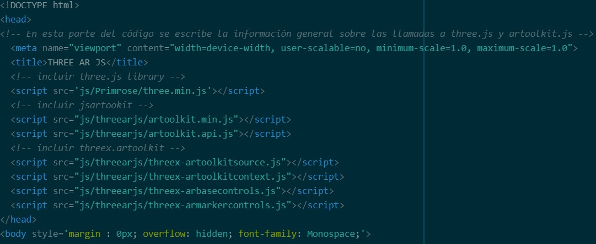

THREE.AR.JS
Graficacion y Animacion
Created by Kevin Torosina and Valeria Alvarez
THREE.JS
Es una librería de Javascript desarrollada por Ricardo Cabello en 2010. Esta increíble herramienta nos permite trabajar con gráficos 3D en el navegador, utilizando WebGL, de una manera muy sencilla e intuitiva. Three.js es excelente para llevar el Creative Coding al navegador. Es a WebGL lo que jQuery es a JavaScript, ofrece sintaxis declarativa amada por muchos, y abstrae los dolores de cabeza del 3D en los navegadores.
JSARTOOLKIT
Es una biblioteca de realidad aumentada para JavaScript. También se considera una biblioteca de software libre publicada bajo la Licencia Pública GNU y un puerto directo de FLARToolKit para Flash que creé para la demo de realidad aumentada con aceleración gráfica de Mozilla.
FLARToolKit en sí es un puerto de NyARToolKit de Java, que a su vez es puerto de ARToolKit C. JSARToolKit opera en elementos canvas. Debido a que necesita leer la imagen fuera del elemento canvas, es necesario que esta proceda del mismo origen que la página o que utilice la tecnología CORS para obtener una política con aproximadamente el mismo origen.
En resumen, establece la propiedad crossOrigin del elemento de vídeo o imagen que quieras utilizar como textura para '' o 'anonymous'.
VENTAJAS
Rápida render: Con objetos simples se llega a 60fps.
Orientado a web: Antes debíamos instalar programas y plugin. Ahora con esta solución no requiere nada porque es enteramente javascript (three.js + jsartoolkit5).
Open Source : libre, libre, libre.
Estandarizado: Funciona con cualquier navegador que corra webgl y webrtc.
EJEMPLO
